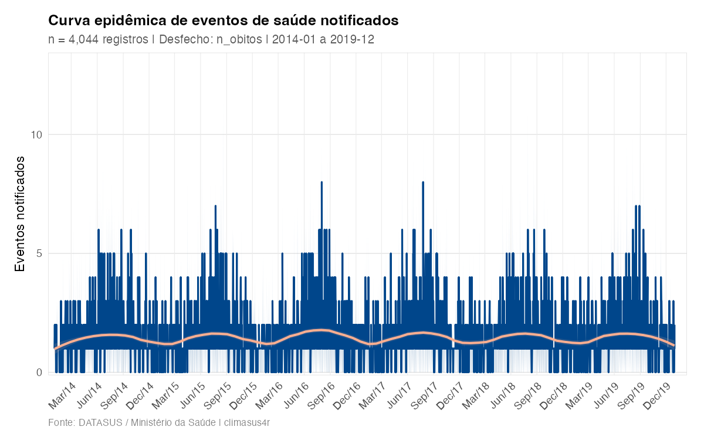
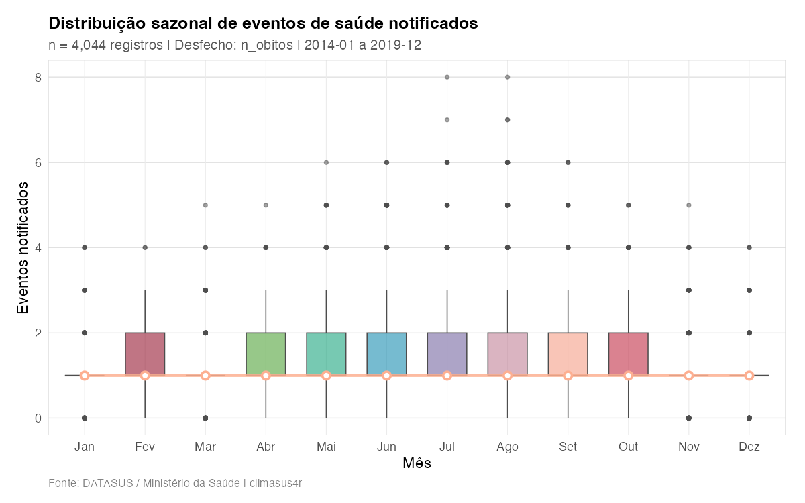
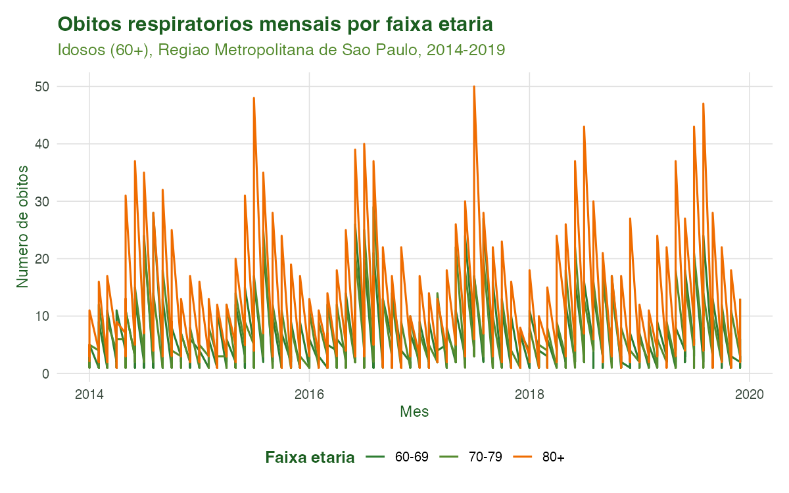
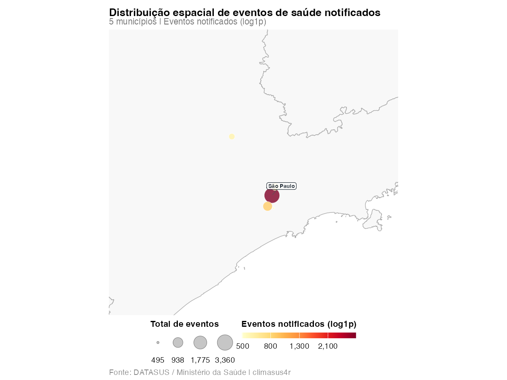

Tutorial 4: Criação de Variáveis e Agregação Temporal
Equipe climasus4r
22/06/2026
Source:vignettes/04-variaveis-agregacao.Rmd
04-variaveis-agregacao.RmdObjetivo
Ao final deste tutorial você será capaz de transformar microdados individuais em uma série temporal pronta para análise. São duas operações encadeadas e duas de visualização:
-
Criar variáveis derivadas —
sus_data_create_variables()— gerando faixas etárias (do usuário, de risco climático e quinquenais do IBGE) e variáveis de calendário (ano, mês, trimestre, estação do ano); -
Agregar no tempo e no espaço —
sus_data_aggregate()— convertendo os registros individuais em contagens por período e por município (diária, mensal, sazonal etc.); -
Visualizar a série temporal —
sus_data_plot_aggregate_ts()— com curvas epidêmicas, boxplots sazonais, mapas de calor de calendário e tendências anuais; -
Visualizar a distribuição espacial —
sus_data_plot_aggregate_map()— com mapas de bolhas ou coropléticos municipais.
Esta é a quarta etapa do pipeline
(derive → aggregate). Ela ocupa um lugar crítico: é aqui
que os dados deixam de ser uma tabela de eventos individuais e passam a
ter a forma exigida pelos modelos clima–saúde do Tutorial 9 (uma
contagem
por unidade de tempo
).
Contexto científico
Estudos de séries temporais em epidemiologia ambiental modelam a contagem de desfechos por período (por exemplo, óbitos por dia) em função da exposição ambiental (temperatura, poluição). Para isso, os microdados precisam ser agregados em uma grade temporal regular e, frequentemente, estratificados por faixa etária, já que a vulnerabilidade ao calor e ao frio varia muito com a idade (Gasparrini et al., 2015; Bhaskaran et al., 2013).
Duas decisões metodológicas desta etapa têm consequências diretas na análise:
-
A unidade temporal de agregação
(
time_unit) define a resolução do estudo. Séries diárias captam efeitos agudos de curto prazo (ideais para DLNM); séries mensais ou sazonais evidenciam padrões de longo prazo e sazonalidade (Bhaskaran et al., 2013). -
O preenchimento de datas faltantes
(
complete_dates = TRUE) garante uma série sem lacunas: dias sem nenhum óbito recebem contagem zero. Sem isso, modelos de série temporal interpretariam erroneamente a ausência de uma data como ausência de informação, e não como um zero verdadeiro.
As faixas etárias seguem categorizações reconhecidas — incluindo a estrutura quinquenal do IBGE (0–4, 5–9, …, 80+), que assegura comparabilidade nacional e internacional — e uma faixa de risco climático (0–4, 5–64, 65+) desenhada para destacar os grupos mais vulneráveis (IBGE, 2010; WHO, 2014).
Caso condutor. Investigamos a temperatura e os desfechos de saúde em idosos (60+) na Região Metropolitana de São Paulo, 2014–2019. Partindo dos óbitos respiratórios de idosos já filtrados no Tutorial 3 (
caso_filtrado.rds), criamos faixas etárias (60–69, 70–79, 80+) e variáveis de calendário, e agregamos em série diária (todos os óbitos) e em série mensal por faixa etária. A série resultante (caso_serie.rds) alimenta a junção espacial (Tutorial 5) e, adiante, a modelagem (Tutorial 9).
Dados utilizados
| Item | Detalhe |
|---|---|
| Entrada |
dados/caso_filtrado.rds (saída do Tutorial 3) |
| Desfecho | Óbitos respiratórios (CID-10 J00–J99) em idosos 60+ |
| Sistema | SIM-DO (mortalidade) |
| Recorte | Região Metropolitana de São Paulo, 2014–2019 |
| Saída |
dados/caso_serie.rds (entrada do Tutorial 5) |
Se o Tutorial 3 ainda não tiver sido executado, o script de geração
avisa e segue com um exemplo mínimo sintético que tem a
mesma estrutura de colunas padronizadas (data_obito,
codigo_municipio_residencia, idade,
sexo, causa_basica) — assim a etapa é
ilustrada de ponta a ponta.
Pipeline completo
Os blocos abaixo reproduzem o que o script
scripts/tutorial_04_variaveis_agregacao.R executa. Comece
carregando o pacote:
library(climasus4r)Carregar a saída da etapa anterior
caso_filtrado <- sus_data_read("output/caso_filtrado.parquet")
# ou, no fluxo dos tutoriais, readRDS("vignettes-pt/dados/caso_filtrado.rds")
obitos <- caso_filtrado # climasus_df no stage "filter_cid"/"stand"Criar variáveis derivadas
sus_data_create_variables() cria faixas etárias e
variáveis de calendário em uma só chamada. Aqui usamos faixas voltadas
ao recorte de idosos do caso condutor e ligamos as variáveis sazonais
com a região climática "sudeste".
obitos_vars <- sus_data_create_variables(
obitos,
create_age_groups = TRUE,
age_breaks = c(60, 70, 80, Inf), # idosos jovens / 70-79 / 80+
age_labels = c("60-69", "70-79", "80+"),
create_calendar_vars = TRUE, # ano, mes, trimestre, ...
create_climate_vars = TRUE, # estação do ano
climate_region = "sudeste", # região climática do caso
hemisphere = "south", # Brasil
backend = "tibble",
lang = "pt"
)Além de age_group (definida por
age_breaks/age_labels), a função cria
automaticamente a faixa de risco climático
(grupo_risco_climatico) e a faixa quinquenal do
IBGE (faixa_etaria_ibge), e — com
create_calendar_vars = TRUE — as variáveis
ano, mes, trimestre e a estação
do ano (estacao_climatica +
estacao_seca_chuvosa quando climate_region é
informada; senão, estacao_astronomica).
Agregar em série temporal diária
sus_data_aggregate() converte os registros individuais
em contagens. Com fun = "count" e sistema SIM, a coluna
agregada é nomeada automaticamente como n_obitos.
complete_dates = TRUE preenche dias sem óbito com zero.
serie_diaria <- sus_data_aggregate(
obitos_vars,
time_unit = "day", # uma observação por dia
fun = "count", # contagem de óbitos
group_by = NULL, # agrega no código de município detectado
complete_dates = TRUE, # preenche dias sem evento com zero
backend = "tibble",
lang = "pt"
)Agregar em série mensal por faixa etária
A mesma função, agora estratificando por age_group. Esta
é a série salva para o próximo tutorial.
serie_mensal <- sus_data_aggregate(
obitos_vars,
time_unit = "month",
fun = "count",
group_by = "age_group", # faixa etária criada acima
complete_dates = TRUE,
backend = "tibble",
lang = "pt"
)Visualizar a série temporal
sus_data_plot_aggregate_ts() recebe um
climasus_df no stage "aggregate" e produz
gráficos de qualidade de publicação. plot_type aceita
"epidemic", "seasonal", "heatmap"
e "trend" (e combinações, via patchwork).
# Curva epidêmica diária com suavização loess
sus_data_plot_aggregate_ts(
serie_diaria,
plot_type = "epidemic",
smooth_method = "loess",
palette = "lancet",
lang = "pt"
)
# Boxplot da distribuição sazonal mensal
sus_data_plot_aggregate_ts(
serie_diaria,
plot_type = "seasonal",
lang = "pt"
)Visualizar a distribuição espacial
sus_data_plot_aggregate_map() mapeia as contagens por
município. Para isso, agregamos preservando o código de
município como variável de grupo.
serie_muni <- sus_data_aggregate(
obitos_vars,
time_unit = "month",
fun = "count",
group_by = "codigo_municipio_residencia",
backend = "tibble",
lang = "pt"
)
sus_data_plot_aggregate_map(
serie_muni,
map_type = "bubble", # não exige geobr/sf
log_scale = TRUE,
palette = "YlOrRd",
lang = "pt"
)Ao final desta etapa temos serie_mensal (por faixa
etária) e serie_muni (por município) — a base
temporal/espacial que alimenta os próximos tutoriais.
Características das funções
sus_data_create_variables()
Cria variáveis derivadas a partir da idade e da data do evento.
Requer que os dados estejam no stage "stand" (ou
posterior).
| Argumento | Essencial? | Descrição |
|---|---|---|
df |
sim |
climasus_df padronizado (stage
"stand"+) |
create_age_groups |
sim | Cria age_group, grupo_risco_climatico e
faixa_etaria_ibge (padrão TRUE) |
age_breaks |
opcional | Cortes das faixas etárias; padrão
c(0, 5, 15, 60, Inf)
|
age_labels |
opcional | Rótulos das faixas; se NULL, gerados a partir de
age_breaks
|
create_calendar_vars |
sim | Cria ano, mes, trimestre etc.
(padrão TRUE) |
create_climate_vars |
opcional | Cria a estação do ano; exige
create_calendar_vars = TRUE
|
climate_region |
opcional | Região climática ("norte", "nordeste",
"centro-oeste", "sudeste",
"sul"); define estação seca/chuvosa |
hemisphere |
opcional |
"south" (padrão, Brasil) ou "north"
|
age_col / date_col
|
opcional | Forçam a coluna de idade/data; se NULL,
autodetecta |
backend |
opcional |
"arrow" (lazy, padrão) ou "tibble"
|
lang / verbose
|
opcional | Idioma ("pt"/"en"/"es") e
mensagens |
Retorno: o climasus_df com as novas
colunas e stage avançado para "derive". A idade é
determinada por uma hierarquia: (1) coluna de idade existente, (2)
cálculo a partir de data de nascimento e data do evento (padrão ouro),
(3) decodificação do código de idade do DATASUS (alternativa).
sus_data_aggregate()
Agrega microdados individuais em série temporal de contagens. Requer
stage "stand" (ou posterior).
| Argumento | Essencial? | Descrição |
|---|---|---|
df |
sim |
climasus_df (saída de
padronização/filtragem/derivação) |
time_unit |
sim |
"day", "week", "month",
"quarter", "year", "season", ou
múltiplos como "5 days", "14 days",
"3 months" (padrão "day") |
fun |
opcional |
"count" (padrão), "sum",
"mean", "median", "min",
"max", "sd", "q25",
"q75", "q95", "q99", ou lista
nomeada |
group_by |
opcional | Colunas de estratificação (ex.:
c("age_group", "sexo")); NULL agrega no
município detectado |
value_col |
só se fun != "count"
|
Coluna numérica a agregar |
complete_dates |
recomendado |
TRUE preenche períodos sem evento com zero (padrão
FALSE) |
date_col |
opcional | Coluna de data; se NULL, autodetecta por sistema |
backend |
opcional |
"arrow" (lazy, padrão) ou "tibble"
|
lang / verbose
|
opcional | Idioma e mensagens |
Retorno: um climasus_df no stage
"aggregate" com uma coluna date (início do
período), as colunas de group_by e a coluna de contagem
nomeada de forma inteligente pelo sistema:
n_obitos (SIM), n_internacoes (SIH),
n_nascimentos (SINASC), n_casos (SINAN),
n_procedimentos (SIA), n_estabelecimentos
(CNES).
sus_data_plot_aggregate_ts()
Gráficos de série temporal a partir de um climasus_df no
stage "aggregate".
| Argumento | Descrição |
|---|---|
df |
climasus_df agregado |
value_col |
Coluna do desfecho; se NULL, autodetecta
(n_obitos, n_casos, …) |
plot_type |
"epidemic", "seasonal",
"heatmap", "trend" (aceita vários, via
patchwork) |
group_col / facet_col
|
Coluna para cor (epidemic/seasonal) e para painéis
(facet_wrap) |
smooth_method / smooth_span
|
Suavização da curva epidêmica: "loess" (padrão),
"gam", "lm", "none"
|
log_transform |
Aplica log1p no eixo y / preenchimento |
palette |
"lancet" (padrão), "nejm",
"jco", "uchicago", "viridis"
|
city |
Filtra municípios (nome ou código IBGE) antes de plotar |
interactive |
TRUE retorna um widget plotly
|
lang / verbose
|
Idioma e mensagens |
Retorno: o objeto ggplot2 (ou
plotly se interactive = TRUE), invisivelmente;
também imprime o gráfico. Não altera o stage de df.
sus_data_plot_aggregate_map()
Mapa municipal das contagens agregadas.
| Argumento | Descrição |
|---|---|
df |
climasus_df agregado com coluna de código
municipal |
value_col |
Coluna do desfecho; se NULL, autodetecta |
map_type |
"bubble" (padrão, sem
geobr/sf), "choropleth",
"quantile_choropleth"
|
rate_per_100k |
TRUE calcula incidência por 100.000 habitantes (usa
pop_25) |
period |
Date ou c(início, fim) para filtrar antes
de agregar |
city / top_n
|
Restringe a municípios; rotula os top_n maiores |
state_borders |
Sobrepõe fronteiras estaduais (via geobr) |
palette |
Paleta RColorBrewer ("YlOrRd",
"Blues", …) ou
"lancet"/"nejm"
|
log_scale |
log1p na escala de cor (padrão TRUE) |
interactive |
TRUE retorna plotly
|
use_cache / cache_dir
|
Cache dos metadados municipais |
lang / verbose
|
Idioma e mensagens |
Retorno: um objeto ggplot2 (ou
plotly). O coroplético exige os pacotes
Suggests geobr e sf; se
ausentes, a função cai para o mapa de bolhas com um aviso.
Não modifica df nem avança o stage.
Fórmulas
A contagem agregada de um desfecho no período
(com fun = "count") é simplesmente o número de registros
cuja data cai naquele período:
onde
é a data do evento
,
arredonda para o início do período na unidade
(time_unit), e
é a função indicadora.
A figura de tendência anual
(plot_type = "trend") reporta a variação percentual ano a
ano (YoY):
Quando rate_per_100k = TRUE no mapa, a taxa de
incidência por município é
Resultados ilustrados

Figura 1. Curva epidêmica diária de óbitos
respiratórios em idosos (60+) na Região Metropolitana de São Paulo,
2014–2019, gerada por
sus_data_plot_aggregate_ts(plot_type = "epidemic"). A área
e a linha mostram a contagem diária; a curva suavizada (loess) destaca a
tendência de fundo.

Figura 2. Distribuição sazonal mensal
(sus_data_plot_aggregate_ts(plot_type = "seasonal")). Os
boxplots por mês evidenciam a sazonalidade de inverno (junho–agosto) da
mortalidade respiratória de idosos — o ponto de partida da hipótese
clima–saúde do caso condutor.

Figura 3. Série mensal estratificada pelas faixas
etárias criadas em sus_data_create_variables() (60–69,
70–79, 80+). É esta estrutura estratificada que se salva em
caso_serie.rds para os próximos tutoriais.

Figura 4. Distribuição espacial dos óbitos por
município
(sus_data_plot_aggregate_map(map_type = "bubble")). O
tamanho e a cor das bolhas codificam o total de eventos por município da
Região Metropolitana de São Paulo (escala log1p).
| data_obito | idade | age_years | age_group | grupo_risco_climatico | faixa_etaria_ibge | ano | mes | trimestre | estacao_climatica | estacao_seca_chuvosa |
|---|---|---|---|---|---|---|---|---|---|---|
| 2018-05-21 | 85 | 85 | 80+ | Alto Risco (65+) | 80+ | 2018 | 5 | 2 | Seca | Seca |
| 2015-12-01 | 86 | 86 | 80+ | Alto Risco (65+) | 80+ | 2015 | 12 | 4 | Chuvosa | Chuvosa |
| 2016-07-01 | 78 | 78 | 70-79 | Alto Risco (65+) | 75-79 | 2016 | 7 | 3 | Seca | Seca |
| 2014-04-15 | 75 | 75 | 70-79 | Alto Risco (65+) | 75-79 | 2014 | 4 | 2 | Seca | Seca |
| 2016-08-19 | 63 | 63 | 60-69 | Risco Padrao (5-64) | 60-64 | 2016 | 8 | 3 | Seca | Seca |
| 2016-11-18 | 82 | 82 | 80+ | Alto Risco (65+) | 80+ | 2016 | 11 | 4 | Chuvosa | Chuvosa |
| 2018-06-28 | 93 | 93 | 80+ | Alto Risco (65+) | 80+ | 2018 | 6 | 2 | Seca | Seca |
| 2015-02-02 | 84 | 84 | 80+ | Alto Risco (65+) | 80+ | 2015 | 2 | 1 | Chuvosa | Chuvosa |
| 2014-07-22 | 85 | 85 | 80+ | Alto Risco (65+) | 80+ | 2014 | 7 | 3 | Seca | Seca |
| 2017-10-16 | 61 | 61 | 60-69 | Risco Padrao (5-64) | 60-64 | 2017 | 10 | 4 | Chuvosa | Chuvosa |
| Serie | Unidade_temporal | N_periodos | Total_eventos | Inicio | Fim |
|---|---|---|---|---|---|
| Diaria (todos os obitos) | dia | 2191 | 6000 | 2014-01-01 | 2019-12-31 |
| Mensal (por faixa etaria) | mes | 72 | 6000 | 2014-01-01 | 2019-12-01 |
Referências
- Bhaskaran, K., Gasparrini, A., Hajat, S., Smeeth, L., & Armstrong, B. (2013). Time series regression studies in environmental epidemiology. International Journal of Epidemiology, 42(4), 1187–1195.
- Gasparrini, A., Guo, Y., Hashizume, M., Lavigne, E., Zanobetti, A., Schwartz, J., et al. (2015). Mortality risk attributable to high and low ambient temperature: a multicountry observational study. The Lancet, 386(9991), 369–375.
- Instituto Brasileiro de Geografia e Estatística (IBGE). (2010). Censo Demográfico 2010. Rio de Janeiro: IBGE.
- World Health Organization (WHO). (2014). Quantitative risk assessment of the effects of climate change on selected causes of death, 2030s and 2050s. Geneva: WHO.